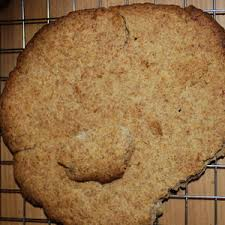

Viking Flatbread

Viking Flatbread is a simple, rustic flatbread inspired by Viking-era cooking, made with basic ingredients like flour, water, and a touch of salt.
Viking Flatbread Recipe
Ingredients:
- 2 cups whole wheat flour (or rye flour for authenticity)
- 1/2 tsp salt
- 3/4 cup water (adjust as needed)
- 1 tbsp olive oil or melted butter (optional, for softer bread)
- Optional toppings: coarse sea salt, herbs, or seeds (e.g., caraway or sesame)
Instructions:
- Mix the Dough:
- In a large bowl, combine the flour and salt. Gradually add water, mixing with your hands or a spoon until a dough forms. If the dough is too dry, add a little more water; if too sticky, sprinkle in some more flour.
- Knead:
- Turn the dough onto a lightly floured surface and knead for about 5 minutes until smooth and elastic.
- Shape the Flatbreads:
- Divide the dough into 6-8 equal pieces. Roll each piece into a ball, then flatten into thin rounds (about 1/8-inch thick).
- Cook the Flatbreads:
- Heat a dry skillet or griddle over medium heat. Cook each flatbread for 2-3 minutes per side or until golden brown spots appear. If desired, brush lightly with olive oil or butter after cooking.
- Serve:
- Serve warm with butter, cheese, or honey, or use them to scoop up Thor’s Hearty Stew!
Viking Flatbreadis rustic and hearty, a perfect companion to any meal—simple, timeless, and deliciously satisfying.
Homepage